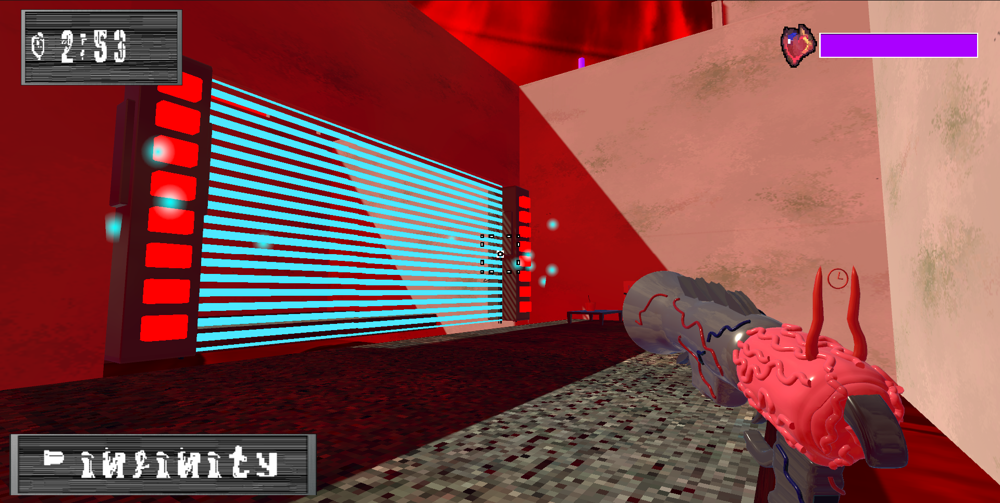

Game Design

As part of a project, we had to work in groups to design a game. Our group designed Chronosyphonics, a first-person puzzle platformer shooter, where the player needs to use multiple different types of bullets to solve a variety of puzzles. For this, I implemented most of the UI, the title screen, and an opening cinematic made with the entire group. We do have plans to develop this game further, but development is currently paused.
As part of a project, we had to work in groups to design a game. Our group designed Chronosyphonics, a first-person puzzle platformer shooter, where the player needs to use multiple different types of bullets to solve a variety of puzzles. For this, I implemented most of the UI, the title screen, and an opening cinematic made with the entire group. We do have plans to develop this game further, but development is currently paused.

For one assignment, I was required to host an interactive demonstration of a 3D model of one of Da Vinci's sketches. This demo is playable here. This was a fully self-made project, with the exception of the font used for the tutorial text.